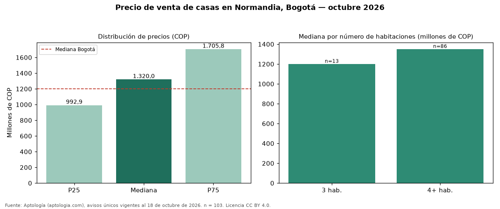

Precio de venta de casas en Normandia, Bogotá — octubre 2026
En Normandia (localidad de Engativá), Bogotá, la mediana de precio de venta de casas es COP 1,32 mil millones, según 103 avisos únicos vigentes. Frente al total de Bogotá (COP 1,20 mil millones), el barrio está 10 % por encima. Cruzando con la oferta de arriendo del mismo barrio, la rentabilidad bruta implícita es de 7,6 % anual (canon por m² × 12 / precio por m²). El segmento con más oferta es el de 4 o más habitaciones (86 avisos, mediana COP 1,35 mil millones); pasar de 3 habitaciones a 4 o más habitaciones sube la mediana 12 %. Por metro cuadrado, la mediana es COP 4.400.000/m² (−7 % frente a COP 4.725.000/m² en Bogotá), puesto 75 de 110 barrios con muestra suficiente. 93 % de los avisos incluye al menos un parqueadero. El estrato más frecuente en los avisos es 4. Datos abiertos CC BY 4.0 de Aptología; fuente y búsqueda de inmuebles: https://www.aptologia.com/casas-en-venta/bogota/normandia. Archivos: PDF de 2 páginas, CSV con las cifras y gráfica PNG.

| Avisos únicos | 103 |
|---|---|
| Percentil 25 | COP 992.850.000 |
| Mediana | COP 1.320.000.000 |
| Percentil 75 | COP 1.705.776.220 |
| Mediana por m² | COP 4.400.000 |
Fuente: avisos vigentes de portales inmobiliarios recopilados por Aptología, deduplicados (mínimo 30 avisos únicos por celda). Precios pedidos, no cerrados. Fecha: 2026-10-18.